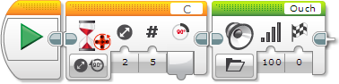

					<table cellpadding="0" cellspacing="0" border="0"><tbody><tr><td>
	
						<h1>使用电机转动传感器<a name="top"></a></h1>
		<div id="block_898" class="block blockHeader">
				<div class="description"><br>
<br>
电机转动传感器用于测量电机的转动量。转动传感器内置在中型电机、大型电机和 NXT 电机中。这些电机中的传感器可以检测旋转量（以度为单位）。电机转动一整圈是旋转 360 度。<br>
<br>
还可以使用电机转动传感器查明电机当前运行所处的功率级别。</div>
			</div>
	<div id="block_899" class="block blockTip">
		<div class="title">提示和技巧</div>
		<div class="boxContent">
			<div class="description">电机转动传感器与连接到 EV3 程序块上的电机端口（A、B、C 或 D）的电机一起使用。电机转动传感器不能与 EV3 传感器端口（1、2、3 和 4）一起使用。</div>
				</div>
	</div>
	<div id="block_901" class="block blockChaptor">
		<div class="title"><a name="MotorRotationData" style="position:relative; top:-10px;"></a>电机转动数据</div>
		<div class="description">电机转动传感器可以提供以下数据：</div>
	</div>
	<div id="block_902" class="block blockTable ">
		<table class="blockTable">
		

			<tbody><tr>
<th>数据</th><th>类型</th><th>备注</th>			</tr>
<tr><td>度数 <a name="Degrees" style="position:relative; top:-10px;"></a></td><td>数字</td><td>以度为单位的旋转量</td></tr><tr><td>圈数 <a name="Rotations" style="position:relative; top:-10px;"></a></td><td>数字</td><td>以圈为单位表示的旋转量（度数/360，采用小数形式）</td></tr><tr><td>当前功率 <a name="CurrentPower" style="position:relative; top:-10px;"></a></td><td>数字</td><td>如果电机正在运行，则为当前电机功率级别 (1-100)，如果电机停止，则为 0</td></tr>		</tbody></table>
	</div>
	<div id="block_903" class="block blockChaptor">
		<div class="title"><a name="ResettingAMotorRotationSensor" style="position:relative; top:-10px;"></a>重置电机转动传感器</div>
		<div class="description">电机转动传感器可以在程序中的任何位置重置为零。传感器随后测量相对于重置位置的总旋转量。要重置电机转动传感器，请使用“重置”模式的<a href="./index.html?id=RotationSensor">电机旋转</a>模块。</div>
	</div>
	<div id="block_904" class="block blockTip">
		<div class="title">提示和技巧</div>
		<div class="boxContent">
			<div class="description">如果测量从未重置的电机转动传感器，则会获取自程序开始以来电机转动的总旋转量。</div>
				</div>
	</div>
	<div id="block_906" class="block blockChaptor">
		<div class="title"><a name="MotorRotationDirectionAndTotalRotation" style="position:relative; top:-10px;"></a>电机旋转方向和总旋转量</div>
		<div class="description">电机向前旋转会生成正度数或圈数，而向后旋转会生成负数。始终以自传感器上次重置以来的总向前旋转量形式来测量旋转。会从任何累积的向前旋转中减去向后旋转。<br>
<br>
下表显示分几个步骤进行的电机动作的示例，以及在每个步骤之后测量电机旋转的结果。</div>
	</div>
	<div id="block_907" class="block blockTable ">
		<table class="blockTable">
		

			<tbody><tr>
<th>步骤</th><th>动作</th><th>当时的电机旋转为：</th>			</tr>
<tr><td>1</td><td>程序开始，电机尚未转动</td><td>0 度</td></tr><tr><td>2</td><td>电机向前转动一整圈（360 度）</td><td>360 度</td></tr><tr><td>3</td><td>电机再次向前转动一整圈</td><td>720 度</td></tr><tr><td>4</td><td>电机向前转动 60 度</td><td>780 度</td></tr><tr><td>5</td><td>电机向后转动 30 度</td><td>750 度</td></tr><tr><td>6</td><td>电机重置</td><td>0 度</td></tr><tr><td>7</td><td>电机向后转动 100 度</td><td>-100 度</td></tr><tr><td>8</td><td>电机向后转动 60 度</td><td>-160 度</td></tr><tr><td>9</td><td>电机向前转动 360 度</td><td>200 度</td></tr>		</tbody></table>
	</div>
	<div id="block_908" class="block blockChaptor">
		<div class="title"><a name="ExamplesUsingTheMotorRotationSensor" style="position:relative; top:-10px;"></a>电机转动传感器使用示例</div>
		<div class="description">下面演示了有关在程序中如何使用电机转动传感器的一些示例。</div>
	</div>
	<div id="block_909" class="block blockExample">
		<div class="title">示例 1：在推动机器人时发出声音</div>
		<div class="image"></div>
		<div class="description">此程序在用手推动机器人以使轮子移动一点时，使机器人发出声音。此程序使用“电机旋转 － 更改 － 度数”模式的<a href="./index.html?id=Wait">等待</a>模块等待电机 C 的转动传感器在任一方向上更改 5 度。随后<a href="./index.html?id=Sound">声音</a>模块发出声音。</div>
	</div>
	<div id="block_910" class="block blockExample">
		<div class="title">示例 2：以某种模式驱动特定距离</div>
		<div class="image"></div>
		<div class="description">此程序使机器人直线驱动 2 圈，然后以之字形模式驱动总共 6.5 圈。它通过先移动一个轮子，然后移动另一个轮子，从而以之字形模式驱动。之字形模式在<a href="./index.html?id=LoopCondition">循环</a>中重复，直至电机 B 驱动了总共 6.5 圈。此程序使用“电机旋转 － 圈数”模式的循环在电机 B 的转动传感器测量了总共 6.5 圈时停止循环。为了使这 6.5 圈仅测量之字形驱动，而不包括开始时的 2 个直行圈数，在使用“重置”模式的电机旋转模块进行之字形驱动之前，电机 B 的转动传感器会重置为零。</div>
	</div>
	<div id="block_911" class="block blockExample">
		<div class="title">示例 3：速度控制表盘</div>
		<div class="image"></div>
		<div class="description">此程序使连接到端口 C 的电机充当连接到端口 B 的电机的速度控制表盘。用手向前和向后转动 C 电机可控制 B 电机的速度。此程序使用“测量 － 度数”模式的<a href="./index.html?id=RotationSensor">电机旋转</a>模块测量电机 C 转动的度数。此结果用于<a href="./index.html?id=Motor">大型电机</a>模块的“功率”输入，还会使用<a href="./index.html?id=Display">显示</a>模块进行显示。该过程在<a href="./index.html?id=LoopCondition">循环</a>中重复执行，以便持续更新速度。</div>
	</div>
	<div id="block_912" class="block blockTip">
		<div class="title">提示和技巧</div>
		<div class="boxContent">
			<div class="description">如果大型电机模块的“功率”输入大于 100，则会使用 100% 功率。</div>
				</div>
	</div>
	<div id="block_914" class="block blockChaptor">
		<div class="title"><a name="MotorRotationBlocksAndModes" style="position:relative; top:-10px;"></a>电机旋转模块和模式</div>
		<div class="description">下表显示可以与电机转动传感器一起使用的编程模块和模式。</div>
	</div>
	<div id="block_915" class="block blockTable ">
		<table class="blockTable">
		

			<tbody><tr>
<th>模块</th><th>模式</th><th>用途</th>			</tr>
<tr><td><a href="./index.html?id=Wait">等待</a> <a name="Mode_WaitRotationSensorCompareDegrees" style="position:relative; top:-10px;"></a>  <a name="Mode_WaitRotationSensorCompareRotation" style="position:relative; top:-10px;"></a>  <a name="Mode_WaitRotationSensorCompareCurrentSpeed" style="position:relative; top:-10px;"></a></td><td>电机旋转 － 比较</td><td>等待转动传感器达到特定值（度数、圈数或当前功率）。</td></tr><tr><td><a href="./index.html?id=Wait">等待</a></td><td>电机旋转 － 更改</td><td>等待转动传感器按特定量更改（度数、圈数或当前功率）。</td></tr><tr><td><a href="./index.html?id=LoopCondition">循环</a> <a name="Mode_LoopRotationSensorCompareDegrees" style="position:relative; top:-10px;"></a>  <a name="Mode_LoopRotationSensorCompareRotation" style="position:relative; top:-10px;"></a>  <a name="Mode_LoopRotationSensorCompareCurrentSpeed" style="position:relative; top:-10px;"></a></td><td>电机旋转</td><td>重复模块序列，直至转动传感器达到特定值（度数、圈数或当前功率）。</td></tr><tr><td><a href="./index.html?id=CaseSelector">切换</a> <a name="Mode_SwitchRotationSensorCompareRotation" style="position:relative; top:-10px;"></a>  <a name="Mode_SwitchRotationSensorCompareCurrentSpeed" style="position:relative; top:-10px;"></a>  <a name="Mode_SwitchRotationSensorCompareDegrees" style="position:relative; top:-10px;"></a></td><td>电机旋转</td><td>根据转动传感器（度数、圈数或当前功率）在两个模块序列之间进行选择。</td></tr><tr><td><a href="./index.html?id=RotationSensor">电机旋转</a></td><td>测量</td><td>读取转动传感器（度数、圈数或当前功率），并通过数字数据线获取结果。</td></tr><tr><td><a href="./index.html?id=RotationSensor">电机旋转</a></td><td>比较</td><td>将转动传感器（度数、圈数或当前功率）与阈值进行比较，并通过逻辑数据线获取结果。</td></tr><tr><td><a href="./index.html?id=RotationSensor">电机旋转</a></td><td>重置</td><td>将转动传感器重置为零。</td></tr><tr><td>数据日志</td><td></td><td>请参见“数据日志”。</td></tr>		</tbody></table>
	</div>
	<div id="block_916" class="block blockTip">
		<div class="title">提示和技巧</div>
		<div class="boxContent">
			<div class="description">电机转动传感器还在以下动作模块和模式内部使用：</div>
			<div id="block_918" class="block blockTable ">
		<table class="blockTable">
		

			<tbody><tr>
<th>模块</th><th>模式</th><th>用途</th>			</tr>
<tr><td><a href="./index.html?id=MediumMotor">中型电机</a>、<br>
<a href="./index.html?id=Motor">大型电机</a></td><td>开启指定度数、<br>
开启指定圈数</td><td>按特定度数或圈数转动电机。</td></tr><tr><td><a href="./index.html?id=Move">移动转向</a>、<br>
<a href="./index.html?id=MoveTank">移动槽</a></td><td>开启指定度数、<br>
开启指定圈数</td><td>通过按特定度数或圈数使用两个大型电机来进行驱动。</td></tr>		</tbody></table>
	</div>
		</div>
	</div>
	
			<div id="quick">
				<div class="header"><a href="./index.html?id=UsingSensors_MotorRotation#header">电机旋转</a></div>
					<div class="quickText">快速链接</div>
					
					<ul>
	<li><a href="./index.html?id=UsingSensors_MotorRotation#MotorRotationData">电机转动数据</a></li><li><a href="./index.html?id=UsingSensors_MotorRotation#ResettingAMotorRotationSensor">重置电机转动传感器</a></li><li><a href="./index.html?id=UsingSensors_MotorRotation#MotorRotationDirectionAndTotalRotation">电机旋转方向和总旋转量</a></li><li><a href="./index.html?id=UsingSensors_MotorRotation#ExamplesUsingTheMotorRotationSensor">电机转动传感器使用示例</a></li><li><a href="./index.html?id=UsingSensors_MotorRotation#MotorRotationBlocksAndModes">电机旋转模块和模式</a></li>					</ul>
			</div>
	
	</td></tr></tbody></table>